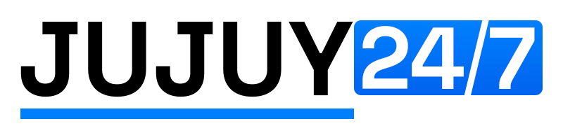
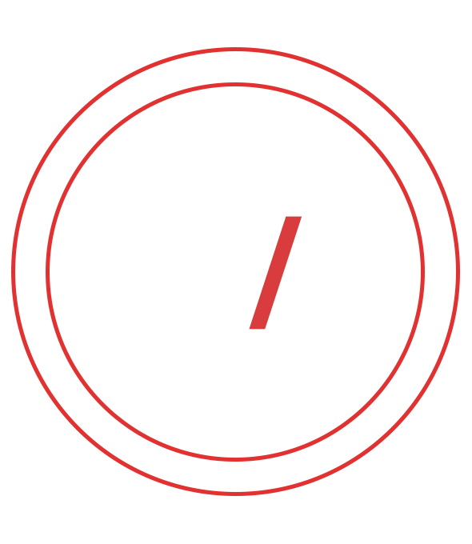
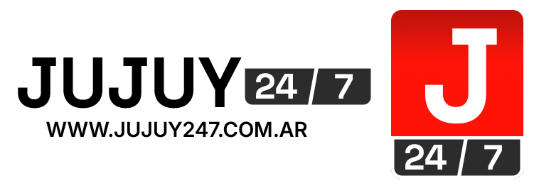

Propuestas para conversar con el cliente
24/7 al frente.
Jujuy siempre presente.
Un medio cercano a la gente, con atención a historias poco cubiertas y una mirada que conecta la provincia con el país y el mundo.
Exploramos otra firma y el amarillo desde lo que ya existe: el nombre, el número y la barra.
Ver investigación y referenciasCuatro caminos para la misma marca
Elegí uno para recorrer sus aplicacionesQué estamos comparando
| Dirección | Lo que aporta | Lo que necesita revisión |
|---|---|---|
| En claro | Lectura directa y continuidad con el 24/7 horizontal. | Dar más carácter propio a los números y afinar la versión de avatar. |
| A la par | Un bloque vertical que ocupa bien un avatar y una placa. | Confirmar que el orden 24 / 7 se lee rápido y que la firma horizontal no pierde fuerza. |
| Tiempo presente | Negro y amarillo, con 24/7 dominante y un reloj como signo de apoyo. | Separarse del aspecto de una aplicación de reloj y comprobar el avatar reducido. |
| Punto de encuentro | Un módulo reconocible para cabecera y video, con la diagonal como vínculo. | Comprobar que el espacio entre módulos se interpreta como barra, incluso en tamaños pequeños. |
Nueva variante: Tiempo presente. Explora negro puro y amarillo con un reloj de apoyo, manteniendo el 24/7 como protagonista. Las otras rutas se conservan para comparar. La composición es una base para ajustar el dibujo, no una identidad ya aprobada.
La historia visual sigue presente
Archivos aportados por el medio, sin modificar


No sabemos todavía qué versión reconoce más la audiencia. Estas propuestas estudian los PNG; no se han auditado las capas de los PSD.
Qué aprendemos de otros medios
Referencias de criterio, no plantillas para copiar. Se separa lo que documenta cada medio de nuestra aplicación a Jujuy247.
BBC · Una identidad también se lee
GEL conecta la familia Reith con la identidad y establece reglas de legibilidad. Para Jujuy247: un logo fuerte debe convivir con titulares y cuerpos cómodos de leer. No usamos su tipografía ni sus bloques.
Fuente: BBC GEL, TypographyThe Guardian · La marca llega al producto
Source reúne marca, diseño editorial y experiencia de usuario. Para Jujuy247: evaluamos la misma identidad en diario, redes y video, además del logo ampliado.
Fuente: The Guardian, SourceAJ+ · La misión se demuestra en las historias
AJ+ define una misión de contexto y de amplificación de voces del Sur Global. Para Jujuy247: la cercanía depende de las personas, las fuentes y las coberturas; no puede descansar solo en un color. No se presupone una misma línea política.
Fuente: presentación editorial de AJ+franceinfo · Claridad antes que ruido
Su renovación de 2024 explica una mejor jerarquía de la información manteniendo su base cromática. Para Jujuy247: el amarillo debe organizar, no convertir todas las notas en alertas. La diagonal del archivo es un recurso propio para desarrollar.
Fuente: France Télévisions, diciembre de 2024TN · Coherencia entre pantallas
La presentación del rediseño digital de 2022 vincula su identidad con componentes consistentes y una apuesta por video. Para Jujuy247: la firma tiene que funcionar como cabecera, avatar y marca audiovisual.
Fuente: TN, presentación de 2022Antes de convertir una ruta en la marca
Elegir una dirección, ajustar los números y la barra, probar lectura con personas ajenas al proyecto y revisar similitudes con otras marcas. Después se construyen el manual y las piezas del relanzamiento.
Las firmas son exploraciones tipográficas sobre Archivo y Barlow Condensed, con licencia OFL. Los SVG están trazados para verse sin instalar fuentes; eso no los convierte en un diseño exclusivo ni garantiza disponibilidad registral.